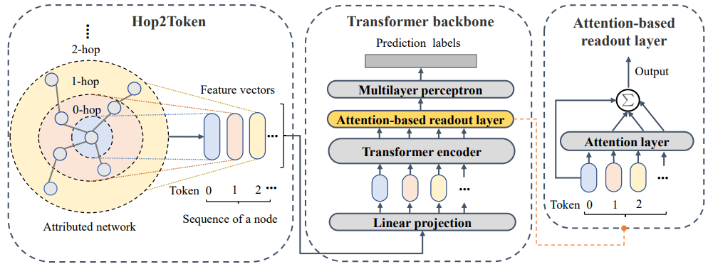

Hi, I am Jinsong Chen (陈劲松), a Computer Science Ph.D. student at Huazhong University of Science and Technology, where I am advised by Prof. Kun He . I received my B.S. and M.S. degree in Computer Science from Xiangtan University and Beijing University of Posts and Telecommunications.
My research lies at graph representation learning and graph data mining.
We propose GCFormer to enhance node representations in graph Transformers by leveraging contrastive learning and a hybrid token generator to capture diverse graph information.

NAGphormer: A Tokenized Graph Transformer for Node Classification in Large Graphs, ICLR 2023.[paper][code]
We propose a novel Graph Transformer that utilizes the neighborhood aggregation of multiple hops to build the input sequence of token vectors and thereby can handle large graphs efficiently.
All Publications
"*": Equal Contribution, "#" Corresponding Author
Conference Papers
Jinsong Chen*, Hanpeng Liu*, John E. Hopcroft, Kun He#. Leveraging Contrastive Learning for Enhanced Node Representations in Tokenized Graph Transformers. NeurIPS 2024
Jinsong Chen*, Kaiyuan Gao*, GaiChao Li, Kun He#. NAGphormer: A Tokenized Graph Transformer for Node Classification in Large Graphs. ICLR 2023
Qiuting He*, Jinsong Chen*, Hao Xu, Kun He#. Structural Robust Label Propagation on Homogeneous Graphs. ICDM 2022
Journal Papers
Jinsong Chen*, Boyu Li*, Qiuting He, Kun He#. PAMT: A Novel Propagation-Based Approach via Adaptive Similarity Mask for Node Classification. IEEE Transactions on Computational Social Systems, 2024
Jinsong Chen*, Boyu Li*, Kun He#. Neighborhood Convolutional Graph Neural Network. Knowledge-Based Systems, 2024
Preprint Papers
Jinsong Chen*, Siyu Jiang*, Kun He#. NTFormer: A Composite Node Tokenized Graph Transformer for Node Classification. arXiv preprint arXiv:2406.19249
Jinsong Chen*, GaiChao Li*, John E. Hopcroft, Kun He#. SignGT: Signed Attention-based Graph Transformer for Graph Representation Learning. arXiv preprint arXiv:2310.11025
Jinsong Chen*, Chang Liu*, Kaiyuan Gao, Gaichao Li, Kun He#. Tokenized Graph Transformer with Neighborhood Augmentation for Node Classification in Large Graphs. arXiv preprint arXiv:2305.12677
GaiChao Li*, Jinsong Chen*, John E. Hopcroft, Kun He#. Diversified Node Sampling based Hierarchical Transformer Pooling for Graph Representation Learning. arXiv preprint arXiv:2310.20250
GaiChao Li*, Jinsong Chen*, Kun He#. Adaptive Multi-Neighborhood Attention based Transformer for Graph Representation Learning. arXiv preprint arXiv:2211.07970